Truth values, precedence, and short-circuit evaluation
Gregory S. DeLozier, PhD
New keywords: and, or,
not
Rename earlier variables that use those exact names.
android, origin, and notable
remain identifiers.
__input = "21";
answer = number(input()) * 2;
in_range = answer >= 40 and answer <= 50;
print(in_range);Two comparisons; one boolean result: true.
| Source | Token tag |
|---|---|
and, && |
and |
or, || |
or |
not, ! |
not |
Normalize in the tokenizer.
| Left | Right | and |
or |
|---|---|---|---|
false |
false |
false |
false |
false |
true |
false |
true |
true |
false |
false |
true |
true |
true |
true |
true |
not true is false; not false
is true.
not x == y means not (x == y)
a or b and c means a or (b and c)Weakest to strongest:
or, and, not, comparisons,
arithmetic
not false and 2 < 3

expression ::= logic_or
logic_or ::= logic_and { "or" logic_and }
logic_and ::= logic_not { "and" logic_not }
logic_not ::= "not" logic_not | comparisonEach level calls the next tighter level.
1 < 2 < 3 rejected
1 < 2 and 2 < 3 true
(1 < 2) == true trueParentheses settle grouping, not operand types.
divisor = 0;
safe = divisor != 0 and 10 / divisor > 2;
print(safe);The division never runs.
and
or
__input = "ready";
result = false && input() == "ready";
print(result);
print(__input);false
ready| Expression | Behavior |
|---|---|
false and missing |
false |
false and 42 |
false |
true and 42 |
Type error |
false and (1 +) |
Syntax error |
Same tokens and trees for both spellings.
Truth tables, precedence, skipped input, required input.
Accept a supplied number from 10 through 20, inclusive.
Then compare these two expressions:
divisor != 0 and 10 / divisor > 2
10 / divisor > 2 and divisor != 0When does changing the order change the behavior?